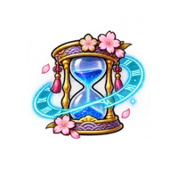
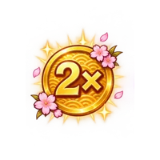
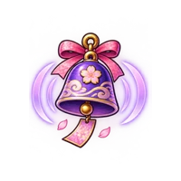
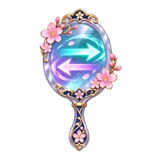
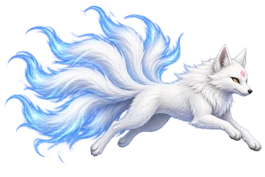
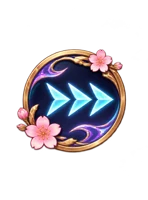

Stay airborne
Tap the playfield to lift Chisa. Time your taps to pass safely between the pillars.
PLAYER GUIDE & APP SUPPORT
Controls, magical abilities and answers to common questions for Chisa Moonlight Flight!!
HOW TO PLAY
Tap the playfield to lift Chisa. Time your taps to pass safely between the pillars.
Use a long right swipe to dash. In Mirror World, swipe left instead.
The exact center earns 5 points. Tight near misses charge your rewind meter.
THE COMPLETE ABILITY GUIDE
Collect glowing charms during your run. Dash is a swipe control, and Rewind must be charged through close calls.
This guide describes the latest update. If a feature is missing, check which app version is installed and whether its update is available.
A little protection
Absorbs one pillar hit. Starts with 15 seconds of protection; collecting another can extend it to 25 seconds.

Room to breathe
Slows the world for 7 seconds. Extra pickups can extend the timer to 12 seconds.

Make every gap count
Earn twice the points for 12 seconds, including Perfect bonuses. Extra pickups can extend it to 20 seconds.

Find your way in the dark
Enter darkness for 15 seconds. Tap to send out red light pulses that reveal your surroundings and hidden yokai.

A whole new direction
Flip the world for 10 seconds. Chisa flies left and pillars approach from the left. Swipe left to dash; tapping still makes Chisa fly.

Unleash the fox spirit
A very rare pickup transforms Chisa into a giant Kitsune. Breathe fire across the screen, destroy pillars, earn 10× score and become invincible for 3 seconds.

A deliberate burst of speed
Make a long swipe forward to dash: right normally, left in Mirror World. Recharges in 1.2 seconds. Tapping alone never triggers a dash.
Earn a second chance
Start with an empty meter. Ten tight near misses or close calls earn a charge. After a mistake, spend it to undo the last second. Up to 3 uses per run; each pillar can charge the meter only once.
COMMON QUESTIONS
Tap the pause button to pause a run. Tap ✦ Abilities at any time to open the complete guide. Gameplay and its animations freeze while you read; Done returns to your previous state. If you were already paused, the game stays paused.
A cleared pillar pair earns 1 point. Fly through the exact center of a gap for a Perfect worth 5 points. Double Points multiplies these rewards by 2. Kitsune destroys pillar pairs for 10× score. The game gets more challenging as you progress.
You must earn it during the run. Each eligible tight near miss or close call adds 10% charge. Ten are needed for a full charge, with no more than 3 rewind uses per run. Replaying the same pillar after a rewind cannot farm extra charge.
You collected Mirror World! It lasts 10 seconds. Keep tapping to fly and swipe left to dash. Normal rightward flight returns automatically when the effect ends.
Dash requires a deliberate long forward swipe to avoid accidental activation. Swipe right normally or left in Mirror World. Wait for the dash indicator to recharge.
The jetpack flames activate briefly when you tap to fly. They do not burn continuously while Chisa is falling.
Tap the trophy to view your best score saved on this device. The current app has no online score syncing. Your record may not be available after removing the app or moving to another device.
Not yet. Both are planned for future updates. There is no announced release date; current scores are local to your device.
Check the in-game mute control, device volume, silent settings and any connected headphones. Start a run, then close and reopen the app if audio is still missing.
Chisa Moonlight Flight!! is designed to stay in portrait orientation on iPhone and iPad. Landscape rotation is intentionally disabled.
Close and reopen the app, then check for an App Store update. If the problem continues, send a bug report with your device model, iOS or iPadOS version, app version and the steps to reproduce it. Avoid deleting the app as a first step because your local best score may be lost.
The artwork includes AI-assisted illustrations bundled with the app. Gameplay does not need a runtime AI service.
No. PayPal support is voluntary and does not unlock abilities, change scores or provide a gameplay advantage.
CONTACT THE DEVELOPER
Send your feedback through GitHub Issues. Include your device model, operating-system version, app version and steps to reproduce the issue. A screenshot or short recording can help.
Report an issue or ask a question ↗A GitHub account is required. Issues are public—please do not post passwords, payment details, private contact information or other sensitive information.
For legacy online-score or privacy requests, see the privacy policy.
Support future development with PayPal →